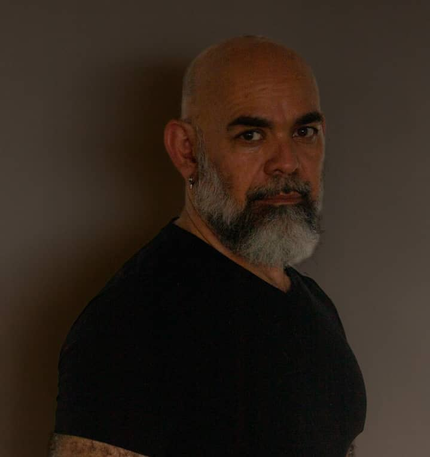

José Elías Changir Diaz, O.C.S.O. - Lc VT
Fecha de Nacimiento: 17/04/1963
Comunidad: Monasterio Trapense NS de Los Andes - MÉrida
Contacto
- Dirección: Caracas - Venezuela
- Teléfono: 04xx- 999.99.99
- Correo Electrónico: correo@gmail.com
Perfil Profesional
Con mi experiencia profesional y mi trayectoria docente puedo ser capaz de cubrir el área de desarrollo curricular en las materias de Teología Fundamental, Dogmática y Filosófica, enmarcado en los niveles básicos y medios que corresponde a la plantilla educativa de la institución, aportando además la estructuracion de normas y procedimientos con la finalidad de garantizar un proyecto educativo confiable que pueda crecer según las demandas institucionales.
Habilidades
- Manejo de herramientas tecnológicas necesarias para desarrollar el trabajo
- Capacidad de Investigación y de análisis y diseño de proyectos
- Capacidad de trabajo en equipo
Educación
- Institución: ITER - Instituto de Teología Para Religiosos
- Titulo Obtenido: Licenciado Filosofía y Teología Fundamental
- Año: 1990
Experiencia
- Maestro de Juniores período 2005-2008
- Redactor Auxiliar Constitución de 2015
- Jefe de Administración de Contenido para la formación de postulantes, novicios y juniores
- Coordinador para las Ámericas de Lc